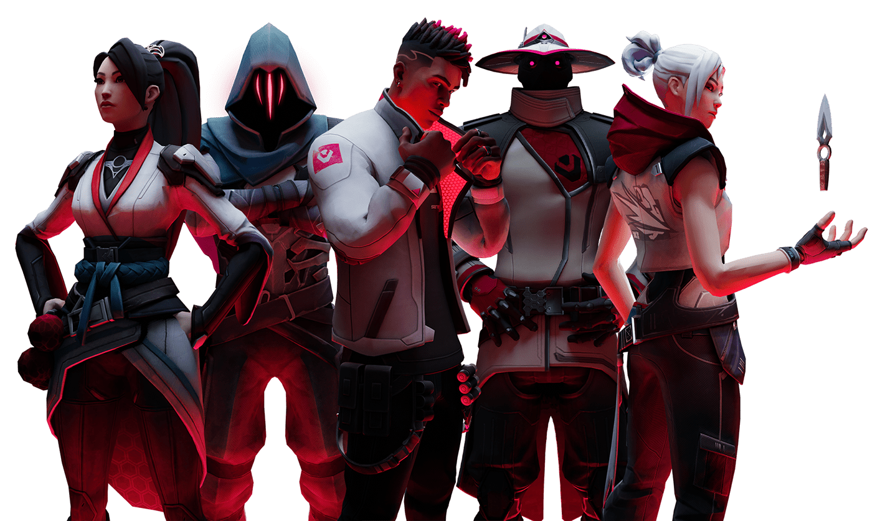

About Myself!
Introduction
My name is Nimesh Bimali I am 14 years old My favorite subject in school is Geography(probably because i play too much fifa)My favorite sport is soccer because the sport has everything to be super competitive: running, aggressiveness, heated atmosphere in games, fast developing, playing against the time.

My favorite Hobbies
My favorite Hobbies are:
Playing Soccer because it's my passion
Listening to Music because keeps me calm
Playing Video games because it's a great way to de-stress

My favorite Video game
Valorant
Valorant is a team-based first-person tactical hero shooter set in the near future. Players play as one of a set of Agents, characters based on several countries and cultures around the world. In the main game mode, players are assigned to either the attacking or defending team with each team having five players on it.

My favorite soccer team
Manchester United F.C.
Manchester United Football Club is a professional football club based in Old Trafford, Greater Manchester, England.The Red Devils(Nickname) they were founded as Newton Heath LYR Football Club in 1878,but changed their name to Manchester United in 1902.Manchester United F.C.has operated for over 140 years. The team first entered the English First Division, then the highest league in English football, for the start of the 1892-93 season.